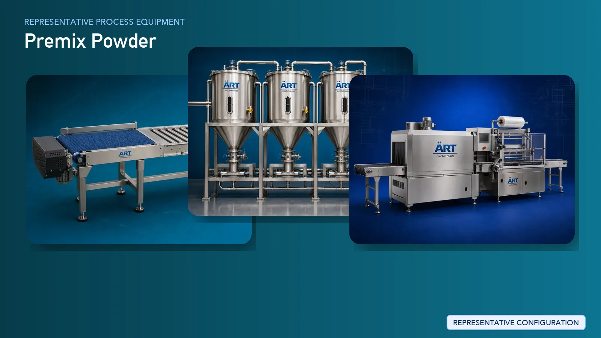

Premix Powder Manufacturing Plant & Machinery Solutions (Tea, Coffee & Instant Beverage Premix)
Premix powder manufacturing is a fast-growing segment in the global beverage and FMCG industry, producing products such as tea premix, coffee premix, milk premix, hot chocolate premix, and flavored instant beverage powders.

About Premix Powder processing
The process requires precise ingredient dosing, uniform blending, controlled agglomeration, and hygienic packaging to ensure instant solubility, consistent taste, and long shelf life.
ART Mechatronics provides complete turnkey solutions for premix powder manufacturing plants, offering advanced systems for mixing, agglomeration, drying, and packaging. Our solutions are designed for high-quality production, uniform formulation, and scalable operations for domestic and export markets.
Complete Premix Powder Process Flow
Ingredients such as tea extract powder, coffee powder, milk powder, sugar, creamer, and flavors are received and stored.
Ensures safe and hygienic storage.
Precise quantities of ingredients are measured.
Ensures:
- Accurate formulation
- Consistent taste
- Homogeneous mixture
- Even distribution of components
Fine powder particles are granulated for better solubility.
Ensures:
- Instant dissolution in water
- Improved flowability
Moisture is controlled after agglomeration.
Ensures product stability.
Powder is classified based on particle size.
Ensures uniform granule size.
Flavoring agents may be added.
Ensures premium product quality.
Final inspection ensures product consistency and hygiene.
Suitable for:
- Single-serve sachets
- Vending machine premix
- Retail packs
Machinery Required for Premix Powder Plant
- Material Handling Systems
- Storage Bins / Silos
- Automatic Dosing System
- Ribbon Blender / Paddle Mixer
- Agglomeration System
- Fluid Bed Dryer
- Vibro Sifter
- Flavor Dosing System
- Packaging Machines
Turnkey Premix Plant Solutions
ART Mechatronics offers complete turnkey solutions for premix powder manufacturing plants, including:
- Process design & plant layout
- Ingredient handling and dosing systems
- Blending and agglomeration systems
- Drying and grading systems
- Automation & control panels
- Packaging line integration
- Installation & commissioning
- After-sales support
We customize solutions based on:
- Product type (tea, coffee, milk, flavored premix)
- Recipe formulation
- Production capacity
- Automation level
Why Choose Art Mechatronics
- Expertise in powder and instant beverage processing
- Precision blending and agglomeration technology
- Excellent solubility and product consistency
- Hygienic food-grade plant design
- High-speed production capability
- Global export capability
Machinery in a Premix Powder plant
Where it's used
Get pricing & specs for the Premix Powder plant
Share the product, target capacity, current process and plant location. These details help our engineers discuss the right machine or line configuration.
One partner, from design to start-up
ART Mechatronics designs, manufactures, installs and commissions your Premix Powder solution with regional presence in India, UAE and Thailand.